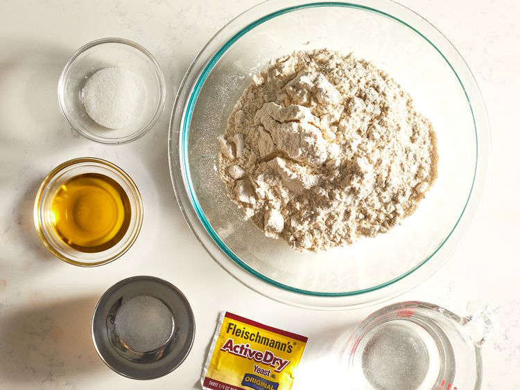
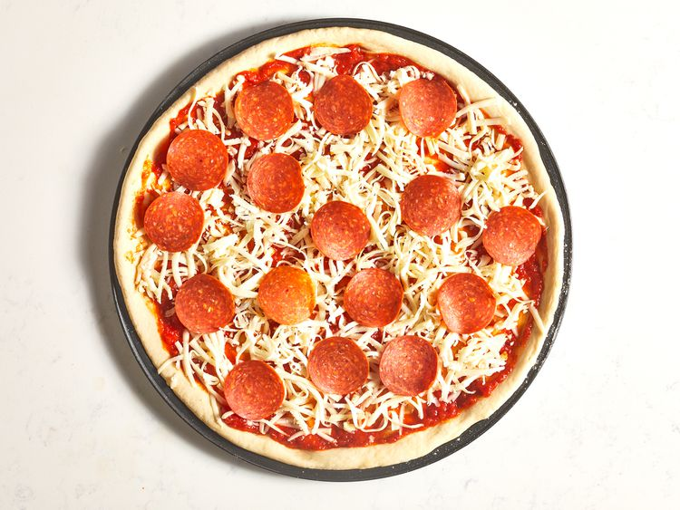

Gather all ingredients. Preheat oven to 450 degrees F (230 degrees C), and lightly grease a pizza pan.
Place warm water in a bowl; add yeast and sugar. Mix and let stand until creamy, about 10 minutes.
Add flour, oil, and salt to the yeast mixture; beat until smooth. You can do this by hand or use a stand mixer fitted with a dough hook to make it easier.
Let rest for 5 minutes.
Turn dough out onto a lightly floured surface and pat or roll into a 12-inch circle.
Transfer to the prepared pizza pan.
Spread crust with sauce and toppings of your choice.
Bake in the preheated oven until golden brown, 15 to 20 minutes. Remove from the oven and let cool for 5 minutes before serving.